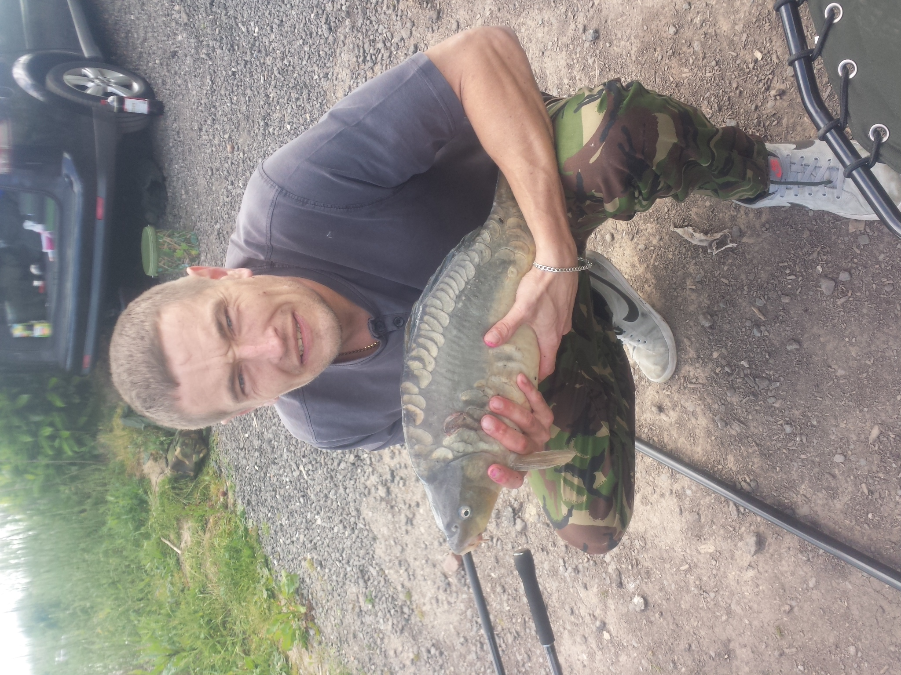

After Fishing at Woodslee and Claremont Farm we decided to go to Chester Lakes.
A really good Campsite and Fishery which includes a bar and restaurant and various entertainment during the summer there are various different lakes for you to fish there so I decided to go to the specimen pit.
Chester Lakes Link
We set up the peg and got to fishing using a simple running ledger rig with Halibut pellets and Mainline Pop Ups
Running Ledger Link
Dynamite Baits Link
Mainline Pop-Up Link
It was rather slow at first but when the temperature raised the carp started to feed and we had even bigger results.

A 13 Pound Mirror Carp.

A 14.5 Pound Mirror Carp.
Another 15 Pound Mirror Carp my personal Best.
Link to next page.